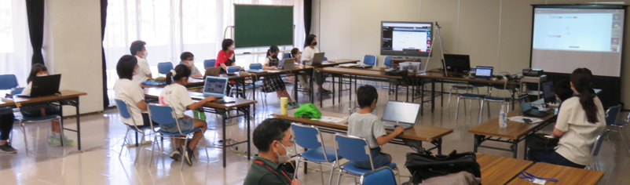
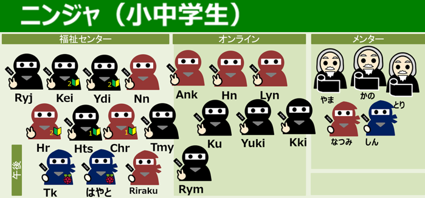
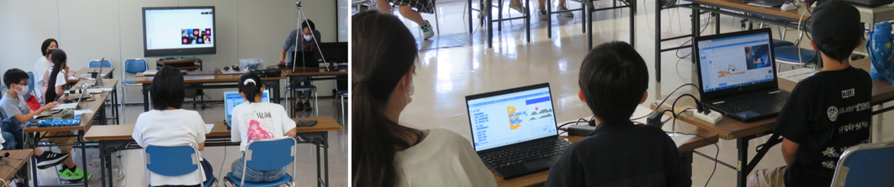
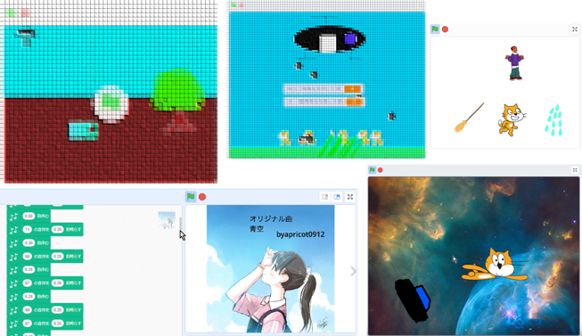
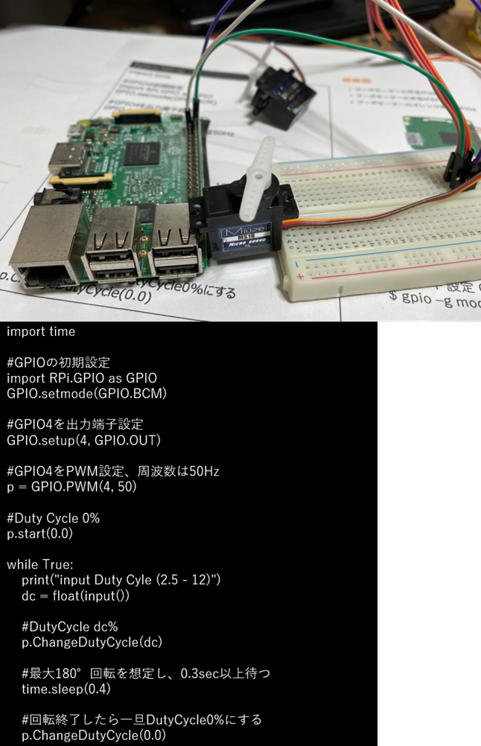
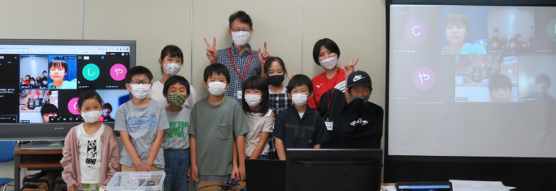

しまったぁ。みんなと遊ぶのが楽しすぎて、作品の撮影を忘れてしまった。
みんなでwhy!?大喜利に挑戦。7月は「SDGs 陸の豊かさも守ろう」をテーマに自由に作ろう。午後はサーボモーターとLinuxネイティブGPIO操作を学習する。

小中学生のニンジャは19人（会場11人［午前8人, 午後3人］＋オンライン8人）が参加しました。保護者5人とメンター5人。総勢29人でプログラミングを楽しみました。

参加者は３つから好きなテーマを選んでプログラミング制作に取り組みます。(1)みんなで共通テーマ (2)自分で決めるテーマ (3)入門Scratchレクチャー。みんなで共通テーマは、NHKのwhy!?大喜利にみんなで挑戦してみます。過去のテーマと作品を３つ紹介。そして７月テーマのうた動画をみんなで視聴してからワークショップ開始。オンラインのブレークアウトルームでは、なんと４人で作品を決めるためのブレーンストーミングでアイディア創出を練る相談をしてくれました！どんな作品が完成するのか楽しみです。

みんなレベルが上がったので少しのプログラムでは完成にしない、まだ途中だから発表しないニンジャや途中だけど開発中のアイディアを発表してくれるニンジャ。大丈夫、今月のwhy!?大喜利は７～８月の２ヶ月間、応募締め切りまであと１回CoderDojoを開催できる。次回も続きをやろう！

前半はLinuxの勉強。Linuxの物理デバイスはファイルで操作できることを体験する。コマンドラインでGPIOデバイスを作成して、GPIOファイルに値1を書き込むとLEDが点灯すること、値0を書き込むとLEDが消灯することを学ぶ。後半は、はじめてのpython（パイソン）。まずは写経して値を変更してサーボモータがどのように動くのかを実験して学ぶ。指定した角度にモータを動かす。PWMを変えてモータ速度を変えてみる。

オンラインにもたくさんのニンジャ。会場ニンジャのみなさんです。
